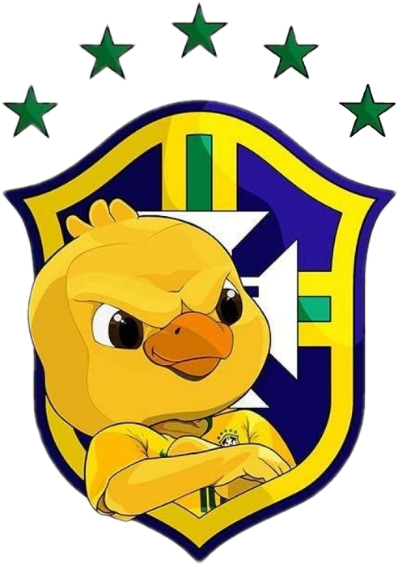
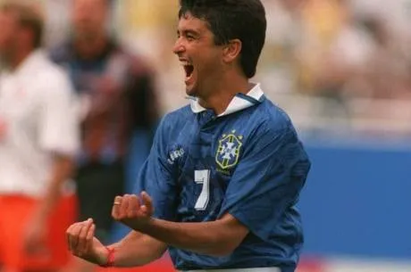
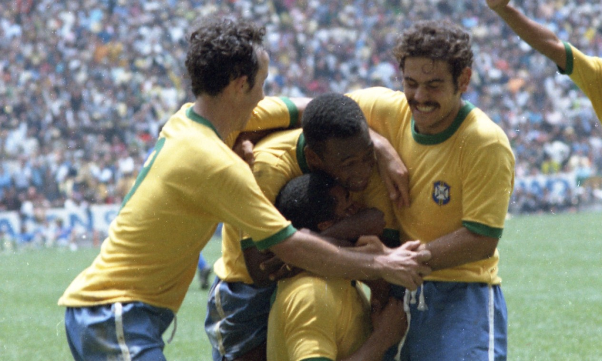
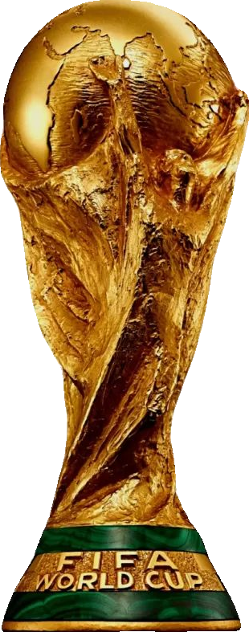
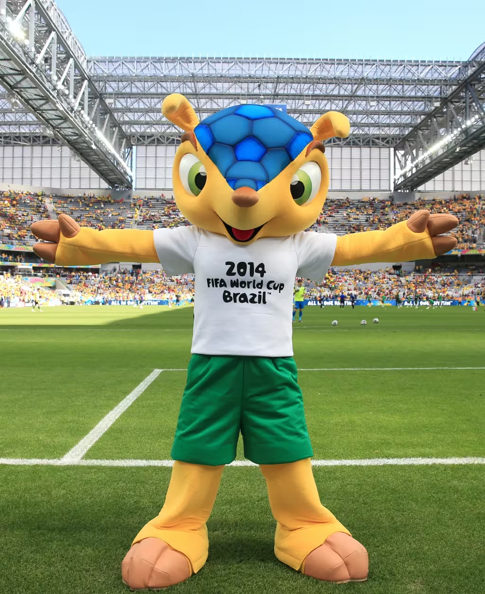
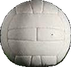
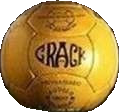
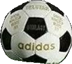
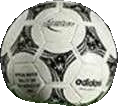
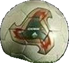

Blog da Seleção Canarinho
Sua fonte de informação sobre a Copa do Mundo FIFA 2026. Aqui você encontra história, curiosidades e tudo sobre a maior competição de futebol do planeta e a trajetória gloriosa do Brasil no cenário mundial.
Explorar históriaSobre o Blog
Bem-vindo ao Blog da Seleção Canarinho — seu portal completo sobre a Copa do Mundo FIFA. Aqui reunimos a história do maior torneio de futebol, os jogos que marcaram gerações, os elencos campeões e muito mais. Explore nossos conteúdos de destaque abaixo e mergulhe no universo do futebol mundial.

Jogos Históricos
Reviva as partidas mais marcantes do Brasil em Copas: dramas, goleadas e finais inesquecíveis que ficaram na memória do torcedor.

Elencos Campeões
Conheça todos os elencos que conquistaram a Copa do Mundo, desde 1930 até 2022, com fichas completas de cada jogador.

Contato
Tem sugestões, correções ou quer colaborar com o blog? Entre em contato conosco e faça parte dessa comunidade.

Mascotes
Conheça todos os mascotes que representaram cada edição da Copa do Mundo, de 1966 até 2026, e seus significados culturais.
História da Copa do Mundo
A história da Copa do Mundo começou há quase um século.
O evento é uma criação do francês Jules Rimet, ex-presidente da FIFA, que em 1928 instituiu a primeira edição para ser realizada dois anos depois, em 1930.
Ao vencedor, seria entregue a taça que levava o nome do então mandatário, e a posse do troféu em definitivo iria para a primeira seleção que fosse tricampeã.
A primeira Copa do Mundo foi sediada no Uruguai, em homenagem ao país que havia conquistado o bicampeonato olímpico no futebol, em 1924 e 1928, e que comemorava o centenário da sua independência.
De forma diferente de outras edições da história da Copa do Mundo, em 1930, as seleções participantes foram indicadas por convite. Naquela época, não havia ainda o sistema de eliminatórias por continente, como conhecemos hoje.
Apenas quatro times europeus disputaram o torneio, pois outros desistiram devido à dificuldade de viajar para a América do Sul na época.
A seleção da casa levantou a taça após vencer a Argentina por 4 a 2 na final, no estádio Centenário, em Montevidéu.
Bolas das Conquistas do Brasil
As bolas oficiais de cada título mundial da Seleção Brasileira

Top Star — Suécia
Primeiro título mundial do Brasil. A bola Top Star era feita de couro com cor marrom-amarelada e 18 gomos costurados à mão. Pelé, com apenas 17 anos, Garrincha e companhia encantaram o mundo e trouxeram a taça Jules Rimet pela primeira vez para o Brasil.

Crack — Chile
Bicampeonato confirmado no Chile. A bola Crack era feita de couro marrom tradicional com 18 gomos e costura externa. Garrincha foi o grande destaque desta edição, ao lado de Vavá, carregando a seleção mesmo com a lesão de Pelé nos primeiros jogos.

Adidas Telstar — México
Tricampeonato com a seleção considerada a melhor da história. A icônica Telstar foi a primeira bola com design preto e branco (32 gomos), criada para ser visível nas transmissões de TV. Pelé, Tostão, Rivelino, Gérson e Jairzinho formaram o time dos sonhos que conquistou a taça Jules Rimet em definitivo.

Adidas Questra — EUA
Tetracampeonato nos Estados Unidos. A Questra tinha design futurista com materiais sintéticos e uma camada de espuma de poliestireno expandido. Romário e Bebeto formaram a dupla letal, e Taffarel brilhou na decisão por pênaltis contra a Itália, encerrando um jejum de 24 anos sem títulos.

Adidas Fevernova — Coreia/Japão
Pentacampeonato com Ronaldo, Rivaldo e Ronaldinho Gaúcho. A Fevernova tinha visual moderno com gráficos em dourado, vermelho e verde, sendo considerada "rápida e imprevisível" pelos goleiros. Ronaldo, superando lesões, marcou 8 gols e foi artilheiro, incluindo os dois da final contra a Alemanha.